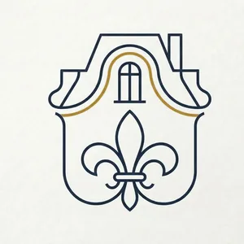
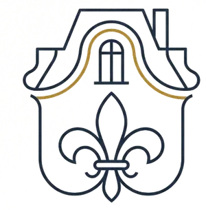
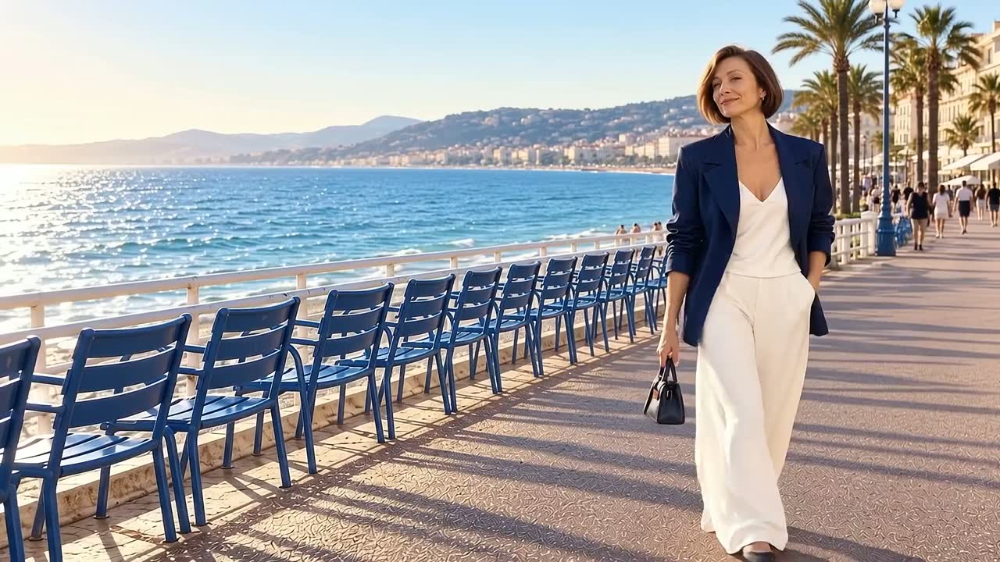
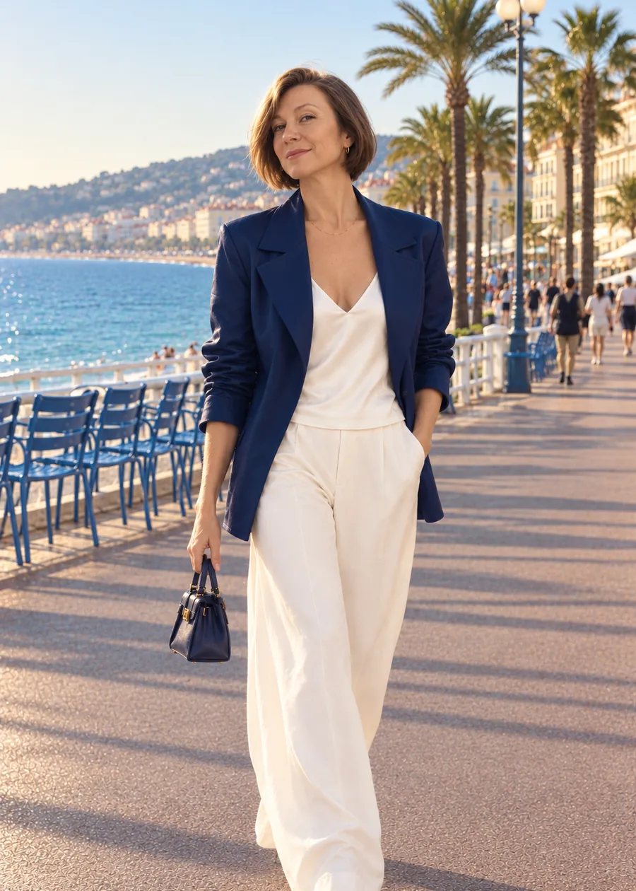

Хотите купить
Подбираю варианты под ваши критерии; если вы далеко — осматриваю объекты сама и присылаю подробный разбор. Сопровождаю от показа до подписания у нотариуса.


Елена
У каждого свой Париж
Сопровождение сделок с недвижимостью
на русском языке
Лазурный берег · Париж ·
Анжу · вся Франция
Елена Вернодон
уполномоченный представитель французского агентства недвижимости
FIJ Immobilier
Помогаю с покупкой и продажей недвижимости любого ценового уровня во Франции — от объектов под реставрацию в провинции до вилл на Лазурном берегу.
Подбираю варианты под ваши критерии; если вы далеко — осматриваю объекты сама и присылаю подробный разбор. Сопровождаю от показа до подписания у нотариуса.
Оценю объект, подготовлю объявление и предварительно отберу покупателей, подтвердивших интерес и возможности; доведу до сделки. Для сложных в продаже или премиальных объектов — отдельный продающий мини-сайт с рекламой.
Помогу открыть счёт во французском банке, собрать кредитное досье и привлечь доверенных нотариусов и юристов.
Мои агентские услуги входят в цену продажи объекта — платить мне за них отдельно не нужно. Рекомендации нотариусов, юристов, банков и других специалистов — бесплатно. Исключение — эксклюзивный мандат на поиск: я ищу только для вас, и эта работа оплачивается отдельно.
Почему я
Елена Вернодон · уполномоченный представитель агентства FIJ Immobilier

В недвижимости я с 90-х — начинала ещё в России.Во Франции с 1999 года.Прошла профессиональное обучение как агент недвижимости, имею сертификаты, профессиональную страховку, зарегистрирована в торгово-промышленной палате.Знаю, как здесь устроена сделка по покупке-продаже недвижимости.
Сделка — это не только нотариус.Банк, кредитное досье, переводы, юристы — если будет необходимо, я свяжу вас с проверенными специалистами.Если вы далеко, работаю на расстоянии: ищу строго по вашим критериям в нужном регионе, сама езжу на просмотры и присылаю подробный разбор каждого объекта.По вашей просьбе до вашего приезда сделаю всё, что можно сделать без вас, — если нужно, по доверенности.
Ключи от французского замка
От первого сообщения до ключей — я рядом на каждом этапе
Пишете в Телеграм. Обсуждаем бюджет, регион, цель: постоянное проживание, отдых, вложение.
Ищу варианты, езжу на просмотры сама (или с вами), присылаю подробный разбор, в том числе видео, если вы далеко.
Предложение цены продавцу и переговоры с продавцом.
Подписывается у нотариуса. После этого у покупателя есть 10 дней, чтобы передумать без потерь.
10 дней на раздумьеБанк, кредитное досье (если нужен кредит), проверки. Без кредита — быстрее.
с кредитом — около 3 месяцевПодписание окончательного акта (acte de vente) у нотариуса и получение ключей.
Контакты
Пишите по-русски — отвечу в Телеграме, по телефону или почте
Напишите в Телеграм, что ищете: бюджет, регион и цель. Предложу, с чего начать.
Написать в ТелеграмЕлена Вернодон